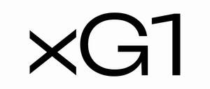

Trade Mark Journal No.2025/029 18 July 2025
UK00004230311 7 July 2025 (5,10,16,18,21,25,29,30,35)
Mark 1

Mark 2
- Class 5
- Elastic adhesive support tapes; cohesive wraps and medical strapping tapes; self-adhesive medical tapes including double-sided variants; pre-wrap underlayers for athletic taping; gauze for medical use; fixation tapes for dressings and bandages; antiseptic sprays and skin-safe adhesive preparations; sprays designed to remove residual adhesive from skin; self-adhesive medical bandages; protective liquid bandage formulations; tapes used in securing wound dressings; bandages for medical use; orthopedic splints; adhesive tapes intended for therapeutic or medical application; Dietary and nutritional supplements and dietetic preparations; vitamin supplements; food supplements for sportsmen, sportswomen and athletes; food supplements in liquid form; protein supplements; protein supplement shakes; mineral nutritional supplements; nutritional supplement energy bars; fitness and endurance supplements; protein powder dietary supplements; nutritional supplement meal replacement bars for boosting energy; powdered nutritional supplement drink mix; nutritional drinks and drink mixes for use as a meal replacement; protein supplement drinks and powders; antioxidants; dietary supplement drinks; herbal supplements; meal replacement powders; mineral supplements; nutraceutical preparations for humans; first-aid kits.
- Class 10
- Kinesiology support tapes; rigid (non-stretch) strapping tapes for physical therapy and sports use; elasticated and non-elastic bandages for joint and muscle support; athletic taping products for injury prevention and recovery; supportive knee wraps and compression bandages; taping and bandaging products used in sports medicine; protective wraps and stabilising tapes for application to the human body; orthopedic supports and braces; suspensory tapes and bandages for athletic use; medical shears and scissors for bandage application; orthopedic-grade bandaging materials.
- Class 16
- Printed publications including educational booklets, instruction manuals, autobiographical works, and teaching resources; directories, printed charts, and planning guides; graphic prints, art reproductions, and visual artwork on paper; writing materials such as pens, markers, and other stationery items; calendars, diaries, daily planners, and exercise books; periodicals, annuals, journals, and printed magazines; postcards, greeting cards, and decorative gift wrap; adhesive decals, transfers, and stickers; paper labels and printed tags; posters, photographs, and printed images; catalogues and brochures; paper or cardboard packaging materials including gift boxes, presentation boxes, and printed cartons; paper and plastic retail bags; bookmarks and notepads; gift cards and entry tickets.
- Class 18
- Bags, holdalls and wallets; luggage; sports bags; bags for athletes; tote bags, duffle bags, messenger bags, backpacks, waist packs, rucksacks; umbrellas; purses, wallets; cosmetic and toiletry cases.
- Class 21
- Drinking bottles; sports water bottles; reusable water bottles; shaker bottles; containers for beverages.
- Class 25
- Clothing, footwear and headgear; leisure clothing, footwear and headgear; gloves; socks; t-shirts, sweat shirts, shorts and caps; sports clothing, footwear and headgear; sports anoraks; fitness and exercise clothing; sports uniforms; shoes; sandals; training shoes; leisure shoes; sleeves; arm bands; head bands; ear-warmers; gaiters; ponchos.
- Class 29
- Prepared meals and snack foods consisting primarily of fruit, nuts and vegetables; fruit and nut based snack bars, snack foods and snack bars containing fruits, nuts, seeds, vegetables, herbs and spices; high-protein snack bars containing fruits, nuts, vegetables, seeds, herbs and spices; low carbohydrate snack foods (fruit, nut and vegetable based); prepared dried fruit mixes; infused raisins; spreads on the basis of nuts, fruits and/or vegetables.
- Class 30
- Confectionery; nutritional confectionery; low carbohydrate confectionery; chocolates; sweets; biscuits; cookies; flapjacks; cereal preparations; flour and preparations made from flour; cereal-based snack foods and snack bars; snack bars containing a mixture of grains, nuts and dried fruit (confectionery); high-protein cereal bars; low carbohydrate cereal preparations; chocolate bars; chocolate-coated bars; spreads on the basis of chocolate.
- Class 35
- Retail and online retail services in relation to the sale of kinesiology tapes, athletic support bandages, elastic and non-elastic strapping tapes, cohesive wraps, adhesive medical tapes including double sided variants, orthopedic support braces, joint stabilisers, and splints; Advertising and marketing services provided by means of social media in relation to kinesiology tapes, athletic support bandages, elastic and non-elastic strapping tapes, cohesive wraps, adhesive medical tapes including double-sided variants, orthopedic support braces, joint stabilisers, and splints; Retail services in relation to the sale of antiseptic sprays, adhesive remover solutions, and liquid bandage products for topical use; retail services in relation to the sale of gauze, underwraps for athletic taping, and fixative tapes for dressings and medical bandages; Retail services in relation to the sale of medical-grade tapes for strapping and injury prevention in sports and rehabilitation; consultancy and product advice services regarding the selection of healthcare and medical supplies; retail services in relation to the sale of scissors for medical use and shears for cutting bandages and dressings; retail services in relation to the sale of sports accessories including water bottles, insulated flasks, drinking containers, bum bags, sports bags, and carry cases; retail services in relation to the sale of apparel, headwear, footwear, decorative decals, pharmaceutical preparations, dietary and nutritional supplements, dietary supplemental drinks, dietary food supplements, dietary supplements and dietetic preparations, dietary supplements consisting of vitamins, vitamins and vitamin preparations, health food supplements made principally of vitamins, health food supplements made principally of minerals; Mail order retail services in relation to dietary and nutritional supplements, dietary supplemental drinks, dietary food supplements, dietary supplements and dietetic preparations, dietary supplements consisting of vitamins, vitamins and vitamin preparations, health food supplements made principally of vitamins, health food supplements made principally of minerals, meal replacement powders, clothing, household containers and scoops, kitchen containers and implements.
Liv and Lot Limited